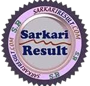

|  SARKARI RESULT WWW.SARKARIRESULT.COM | |||||||
|---|---|---|---|---|---|---|---|
| home | latest job | result | admit card | answer key | syllabus | search | contact us |
SARKARI RESULT : SARKARIRESULT.COM Sarkari Naukri Latest Jobs Online Form At Sarkari Result 2024
| RRB NTPC Graduate Apply Online |
UPDELED 2024 Apply Online |
SSC MTS 2024 Admit Card |
CISF Constable Fire Admit card |
|---|---|---|---|
| UP Scholarship 2024 Apply Online |
CTET Dec 2024 Apply Online |
RRB NTPC 10+2 Apply Online |
SSC GD Constable Apply Online |
| Why Should I Consider Government Jobs |
|---|
In India, a Sarkari Naukri (or an Indian government job) is highly sought-after. It's the ultimate career goal, offering long-term security, good benefits, and friendly co-workers. More than that, an Indian government job offers an opportunity to live a life of purpose. It's a way for you to give back to your community. According to the Centre for Monitoring Indian Economy Pvt. Ltd. (CMIE), the unemployment rate in India increased from 6.5% in November 2020 to 7.75% in October 2021. In this fluctuating market, there has been an increase in the demand for the stability and permanence offered by a Sarkari Naukri. In addition, government jobs in India can be pretty lucrative offering competitive salaries, benefits, and pensions. Some of the highest-paid jobs in the Indian government include the Indian Administrative Services (IAS), Indian Foreign Services (IFS), and Indian Police Services (IPS). Keep in mind that these jobs are also highly competitive with a complex application process! |
| Help Indians Get Government Jobs (Sarkari Job) |
|---|
The future is uncertain, but a government job, Sarkari Jobs can help you secure your future. Click for valuable resources and help from Sarkari Result. Did you know that over 1.5 million people lost their jobs in August 2021 in rural and urban India? Yes,the COVID-19 pandemic has hit the job market hard. Small businesses and multinationals alike have had to reconsider their staffing requirements. Are you an unemployed Indian citizen because of the pandemic and fluctuating job market? Are you working for a multinational company going through restructuring and considering your next steps? according to the Centre for Monitoring Indian Economy Pvt. Ltd. (CMIE), the unemployment rate in India increased from 6.5% in November 2020 to 7.75% in October 2021. In this fluctuating market, there has been an increase in the demand for the stability and permanence offered by a Sarkari Naukri. Are you a recent graduate looking to find your first job? Are you wondering if a government job is right for you? You've come to the right place! At Sarkari Result, we will show you the benefits of an Indian government job and help you to find a government job that's stable, long-term, and right for you! |
| Sarkari Result 2023 - 2024 |
|---|
All information about Sarkari result and Rojgar results can be found on sarkari.result. It is now easy to log into sarkariresult.com and find out everything that you would want to know about most of the Government exams and Sarkari Result. |
| Sarkari Result 2023 - 2024 |
|---|
There are a wide variety of government jobs in India. It depends on your interests, but a job in the Indian government can range from policy-making, public administration, military, law, engineering, and even teaching. Some of the more highly-paid and in-demand positions are discussed below to give you a sense of their requirements and salary expectations. 1. Indian Administrative Services (IAS) and Indian Foreign Services (IFS) Jobs : The role of an IAS officer may include advising the ministers on various policy issues, implementing policies of the government, collecting revenue, and supervising public spending. An IFS officer manages foreign relations in India with more than 160 Indian Diplomatic Missions and International Organizations around the world. The starting monthly salary of an IAS or IFS officer is about INR 56,100. 2. Indian Police Services (IPS) Jobs : A role with the IPS involves safeguarding the public, maintaining law and order, and detecting and preventing crime. The role can be with the various agencies and branches including the Research and Analysis Wing (R&AW), Intelligence Bureau (IB), Central Bureau of Investigation (CBI), and Criminal Investigation Department (CID). To be eligible for a job with IPS, there are additional requirements, including physical standards. Physical eligibility includes minimum height for men and women, minimum chest girth for men and women, restriction on vision impairments including myopia limited to less than -4.00, and hyper myopia not exceeding +4.00. According to Payscale, an entry-level police constable with less than 1-year experience can earn an average total compensation of INR 255,094. This includes tips, bonuses, and overtime pay. 3. Banking Jobs :The banking sector is one of the fastest-growing sectors in India. It's not surprising that jobs in government-approved banks such as the State Bank of India (SBI), Allahabad Bank, HDFC, and ICICI are highly sought after. A job in the banking sector could either be a clerical position such as typists, data entry operators, cashiers, or clerks or a probationary officer (PO) role. As a PO, the candidate will be under probation during the training period and will be hired following the probation based on performance. During the training period, the candidate will be trained in accounting, finance, billing, investment, and revenue collection. A PO role allows opportunities for career growth to middle and senior management based on performance and additional examinations. The starting monthly salary of a PO is about INR 57,000 including allowances. 4. Defence Jobs : Jobs with the National Defence Academy (NDA) can be in various departments, such as Army, Navy, Air Force, Coast Guard, etc. A job in the NDA comes with strict restrictions on age, physical, and vision standards. Cadet trainees receive a stipend of INR 56,100 per month. Allowances and promotions will increase this salary. There are also several agricultural, engineering, and research jobs with their own set of rules and requirements. These can get very complicated, but Sarkari Result does all the work for you and lists the various jobs ranging from a Rajasthani police constable to Allahabad High Court Review Officer. Each job posting contains all the details you would need to be able to apply for the position with ease |
| Why Trust Sarkariresult.com For sarkari results |
|---|
SarkariResult.Com You also know the name of Sarkari Result, this is not only a website but it is the trust of millions of unemployed youth / studying youth. Sarkari Result was established on 01 Jan 2012 and since then this Sarkari Result website is a trust and trust in which crores of youth are looking for government job/exam result/admit card/exam date information. Sarkari Result is the first and most accurate information reaches the youth, for which the entire team of Sarkari Result works 24x7. Whenever a new exam result comes, exam admit card comes or any new government job, whether SSC / UPSC / state government or any other recruitment comes by the central government, first of all the youth open the Sarkari Result website and View information. |
| Information about jobs and results in uttar pardesh on sarkari result Up |
|---|
Uttar Pradesh is a very big state of India, where different types of government jobs keep coming out every month, then updates come related to it like exam date, exam result, exam admit card, answer key and other information. All the young candidates of Uttar Pradesh believe only on Sarkari Result that the information they will get on our website Sarkari Result will be correct and accurate. There are various government agencies and departments in Uttar Pradesh that organize government jobs such as: UPPCL, UPRVUNL, UPSSSC, UPSSSC PET 2024-2025, UPPSC, UPNHM, UPJL, UP Metro, UPSESSB, UPHESC, Allahabad High Court, UP Basic Education Department, UPDELED, UP Police, etc. The information of all the candidates keeps on getting the Sarkari Result from time to time. There are many universities / institutes in Uttar Pradesh whose examination, admission, examination schedule, Time Table , examination results (Yearly / Semester) are available to the candidate on Sarkari Result such as: Rajju Bhaiya University ASU, ECC Prayagraj, Allahabad University, CMP Degree College, IERT Prayagraj, VBSPU Jaunpur , Dr RMLAU, Faizabad, Dr Bhim Rao Ambedkar University Agra, CCSU Meerut, CSJMU Kanpur, Lucknow University, MJPRU Bareilly, MGKVP Varanasi, Sampurna Sanskrit University, BRAU Lucknow, Banaras Hindu University BHU, AKTU Lucknow, BTEUP Lucknow, UP ITI, UP Abhyuday Yojna Free Coaching, etc. All the information about the candidate from time to time on SarkariResult.Com Keeps meeting. |